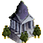

|

|
Das schwarze Brett
|
|
| Übersicht,
Konvente (RPG) |
|
Verlautbarung / Stellungnahme
|

Tura-Konvent |
Eine große Gruppe schwarz Gewandeter betritt die Stadt und versammelt sich in der Mitte des Marktplatzes. Neugierig scharen sich die Anwesenden um die Gruppe. Ein Pergament wird entrollt und eine Stimme erhebt sich.
Noch immer sind die Dämonen nicht gebannt. Wieder und wieder senden sie ihre Schergen um Unheil zu stiften, versuchen so Schatten zu verbreiten.
Die Gnade Turas ist grenzenlos für die, die wandeln im Licht, für die, die streben nach der reinen Seele. Jene aber, die das Dunkel suchen, sie sollen spüren die Kraft des Lichts, die Kraft der Reinheit.
So wurden die Geschwister Pacco, Gloria Alcarin und Hermelin Lauberge von Tura berufen Einhalt zu gebieten dem Dunkel.
Die drei Geschwister treten vor. Sie knien nieder vor dem Ältesten, der ihnen ein silbernes Amulett umhängt. Er breitet seine Arme aus.
Gütige Tura! Erwählt hast Du unsere Geschwister zu kämpfen gegen die Dunkelheit. So bitten wir um Deinen Segen. Möge Deine Kraft die ihre sein.
Zu den Dreien gewandt fordert er sie auf sich zu erheben.
Von nun an sollt Ihr Ritter Turas sein. Diese Aufgabe sollt Ihr ausführen in Würde. Möget Ihr den Schatten fern halten von den Seelen.
Die Anwesenden senken voll Ehrfurcht die Häupter als die Ritter, gefolgt von der restlichen Gruppe der Geistlichen den Marktplatz verlassen. Nachdem die Gruppe die Stadt wieder verlassen hat treffen sich die Bewohner in den Tavernen, um die Segnung der Ritter zu feiern.
Verkünder des Glaubens
Zur 15. Stunde am 45.Erntemond im Jahre 422 |
20.11.05 16:00

|
|
Übersicht,
Konvente (RPG)
|
|
|
|